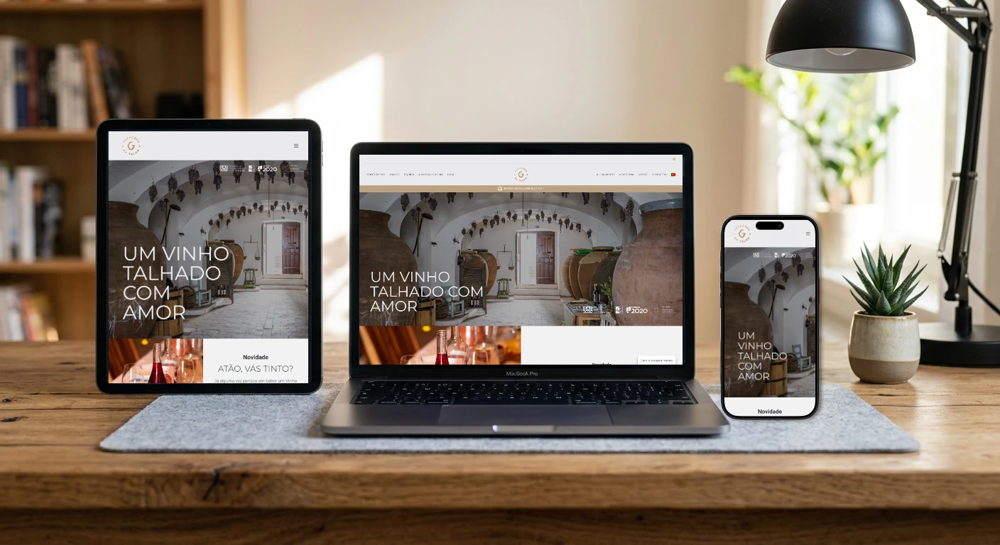
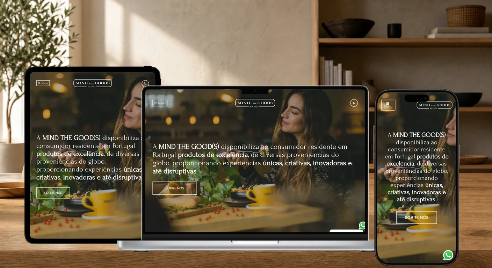

Custom templates
Purpose-built PHP templates and reusable sections shaped around each project's content instead of forcing it into a generic theme.
A selection of responsive WordPress projects where design, custom development and practical problem-solving work together.
Many WordPress features are placed behind premium themes, plugin subscriptions or page-builder add-ons. When the budget did not justify those costs, I used PHP and the platform's own APIs to build the missing pieces directly.
Purpose-built PHP templates and reusable sections shaped around each project's content instead of forcing it into a generic theme.
Small custom plugins, hooks and theme functions used to introduce specific behaviour without adding unnecessary subscriptions or overhead.
Tailored widgets and editable components that give clients useful controls while keeping the front-end output clean and consistent.
Understanding the CMS well enough to create pragmatic solutions when an off-the-shelf option is too expensive, too rigid or simply too heavy.
Each project had its own audience, constraints and goals. Open a case study to explore its responsive presentation, technology stack and project summary.

A responsive institutional website with a clear content hierarchy and a visual identity rooted in the project.
View case studyA polished business presence that makes services easier to understand and navigate on every device.
View case studyA brand-led website focused on direct communication, flexible content and dependable mobile behaviour.
View case studyA conversion-oriented experience designed to communicate the offer quickly and reduce friction.
View case studyA content-first WordPress build structured for comfortable reading, publishing and organic visibility.
View case studyA corporate website that turns technical information into an approachable, responsive interface.
View case studyAn expressive WordPress project balancing personality, manageable content and practical performance.
View case study
A commerce-focused WordPress project designed around clear product presentation and smooth responsive browsing.
View case studyA company website built around clarity, reusable components and straightforward client editing.
View case study